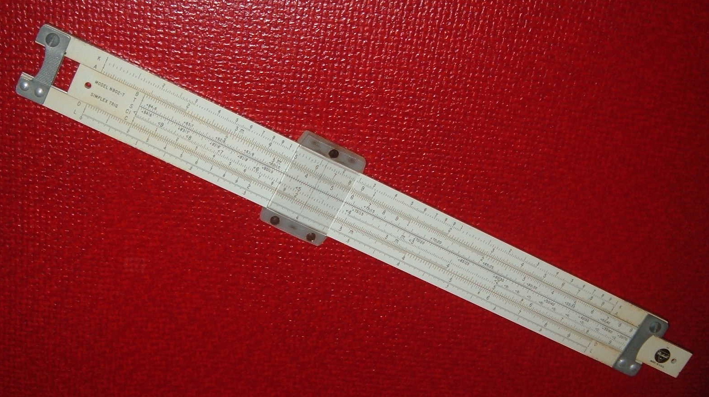
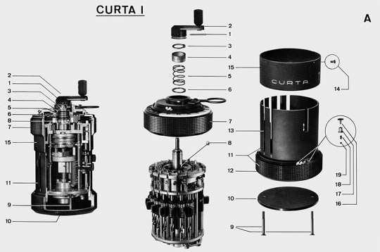

Uvod
Veljko Petrović
Novembar, 2025
Servisne informacije
Opšti podaci o predmetu.
Malo o predavaču
- Veljko Petrović
- Sedim u %NTP% 330 kancelariji
- Uvek je dobro najaviti se na konsultacije
- Konsultacije mogu i po posebnom dogovoru kada je potrebno
- Možemo da se čujemo i online, naravno.
Kontaktiranje - elektronska pošta
- Najbolje me je tražiti na %pveljko@uns.ac.rs%
- Vodite računa da neretko dobijam čitav tsunami elektronske pošte, možda vašu ne vidim ili ne vidim na vreme.
- Ako ste zabrinuti da vam nisam video poruku, slobodno je šaljite opet.
- Ako želite da dobijete odmah odgovor (makar on bio samo ‘video’) molim stavite reč HITNO u %subject% poruke.
Šta je RVP
- U pitanju je prevod—tehnički kalk—engleskog termina %% ‘High Performance Computing’ %% čiju ću skraćenicu %(HPC)% ja koristiti kao ime kursa u budućnosti.
- Opšte govoreći, videćete neobično puno engleskih termina u ovim predavanjima.
- Što?
- Nekad nema prevoda
- Nekad prevod odudara zbog naše nenaviknutosti
- Uvek je neophodno znati engleski termin ako želite da koristite Internet pretragu.
Šta je cilj predmeta
- Uvod u programiranje, ali za super-računare.
- Formalnije rečeno, namena predmeta jeste da se steknu veštine iz:
- Arhitekture sistema visokih performansi.
- Alata, biblioteka, i tehnologija za opšte visoko-paralelno programiranje.
- Alata, biblioteka i tehnologija za domenski-specifično
visoko-paralelno programiranje.
- Naročit fokus ove godine na visokoperformantno mašinsko učenje
- Alata, biblioteka, i tehnologija za merenje performansi algoritama.
- Alata, biblioteka, i tehnologija za vizualizaciju velikih skupova podataka.
- Neformalnije rečeno, namena predmeta jeste da se nateraju programi da idu jako jako brzo.
Literatura
- Dokumentacija, ovi slajdovi, i beleške sa predavanja bi trebali da budu sasvim dovoljni.
- Predavanja su bazirana u velikoj meri na izvrsnoj knjizi %% “High Performance Computing: Modern System and Practices” čiji su autori T. Sterling, M. Anderson, i M. Brodowicz. %% Takođe se preporučuje: %% “Introduction to High Performance Scientific Computing,” Victor Eijkhout %% koja je dostupna kroz %CreativeCommons% licencu. %http://pages.tacc.utexas.edu/~eijkhout/Articles/EijkhoutIntroToHPC.pdf%
Sterlingova Knjiga
O slajdovima
- Slajdovi su novi za ovu generaciju i predstavljaju proširenu verziju slajdova ranijih godina
- Promenila se i tehnologija slajdova koji se sada generišu u dve forme, statičan %PDF% i interaktivna %HTML% prezentacija
- %PDF% prezentacija će biti na %ACS% repozitorijumu, dok će %HTML% verzija biti dostupna %online%
- Možete pratiti prezentaciju dok je slušate preko %online% verzije.
Kako se polaže?
- Predispitne obaveze nose 70 bodova
- Kako te bodove stičete čućete na vežbama
- Ispit nosi 30 bodova
- Te bodove stičete na klasičnom ispitu koji će gotovo sigurno biti usmen i pokrivaće gradivo koje ste radili na predmetu.
Infrastruktura
- Budući da je predmet zahtevan, nemamo baš najbolju moguću podršku u laboratorijama fakulteta
- Trebaće vam %Linux,% idealno najsvežija %Fedora% ili %Ubuntu% bilo direktno instaliran, bilo u virtuelnoj mašini.
- Dosta posla će se raditi iz komandne linije.
- Naš primarni jezik je %C/C++,% mada će biti i malo %% Python-a %% i %% R-a %% kasnije.
- Sav naš alat će biti %% Open Source %% izuzimajući, opciono, %CLion%
%IDE.%
- %CLion% se plaća i to puno, ali kao studenti FTN-a imate pravo na besplatnu %JetBrains% licencu.
- Ako ne želite IDE, %% Visual Studio Code / Codium %% je sasvim prikladan ili naravno neki drugi editor u kome uživate.
%Linux?%
- Da, %Linux.%
- Ispostavilo se, avaj, da nijedna godina nije godina %% Linux-a %% na %% desktop-u %%, ali kao utešna nagrada, svaka godina je godina %% Linux-a %% u %HPC% primenama.
- Upotreba bilo čega drugog nije ni opcija za nas.
- Ako vam rad sa %% Linux-om %% nije udoban, krajnje je vreme da se naviknete.
- %% Embrace the penguin. %%
Komandna linija
- Resursima %HPC% sistema se pristupa manje-više isključivo iz komandne linije i dosta alata se može, u stvari, samo razumeti u kontekstu komandne linije i nikako drugačije.
- Treba će vam razumevanje osnovnih komandi i sistemskih promenljivih da bi razumeli kako alati koje mi koristimo rade.
%% C/C++ %%
- Nemamo izbora.
- Ovo, baš ovo, je mesto gde %C% i %C++% briljiraju.
- Ima modernih jezika koji su interesantni i obećavaju da će
eventualno smaknuti u ovoj oblasti primenu %C% i %C++-a,% ali još nisu u
potpunosti zavladali
- %Rust% je naročito bitan jezik
- %Go% je takođe bitan kada se govori o performantnim sistemima
- %C/C++% je tehnički… pipav termin. Ono što ja ovde mislim jeste %C% i, gde možemo, moderan %C++.%
- Budite srećni, mogli smo da koristimo %FORTRAN.%
%Python% i %R%
- Biće malo ova dva jezika kada budemo pričali o vizuelizaciji.
- HPC rad je retko rad sam za sebe—tipično rešavamo nekakav problem.
- Stoga, heterogenost jezika je česta.
- Neretko postoji prototip u nečemu udobnom kao što je Python, a vaš posao je da uzmete to i učinite ga mnogo bržim.
- Naravno, Python je apsolutno ključan kada je u pitanju mašinsko učenje.
Problemi Performansi
Brzo o bzini i optimizaciji.
Šta su performanse
- Imamo dve moguće definicije:
- Teoretske performanse.
- Praktične performanse.
- Teoretske performanse su apsolutni maksimum koji neki hardverski sistem može da izvuče i meri se u broju nekakvih operacija u sekundi. Najčešće, jedinica je %% FLOPS—FLoating point OPeration per Second. %%
- Računari kakve vi, realistično, imate imaju performanse koje se mere u desetinama %% gigaFLOPSa %%, ne računajući %GPU.%
- Najbrži računar? Frontier. 1679.82 petaflops. 8 699 904 jezgara. Čudo šta 22.7MW može da uradi.
Šta su performanse?
- To je lepo, ali nama ne treba računar da troši struju i zvuči impresivno.
- Nama treba rešenje, i to dovodi do praktičnih performansi.
- Praktične performanse su, efektivno, koliko vremena treba da se dođe do rešenja.
- Mnogo su realističnije (pošto nas baš to zanima) ali dobiti ih je jako jako teško.
- Tipično se procenjuju na osnovu kalibracionog programa—Benchmark-a.
Kako programer zamišlja računar?
- Moj program ima nekakve podatke i sam kod.
- I jedno i drugo živi u memoriji.
- Kod se sastoji od atomskih operacija, instrukcija koje traju neku jedinicu vremena \(t_i\).
- Procesor izvršava moje instrukcije, jednu po jednu.
- Ako hoću brži program, opcije su mi:
- Manje instrukcija.
- Kraće \(t_i\).
%% Oh, sweet child of summer… %%
- …svi vi, znate, nadam se, da ovo nije tačno.
- Ali možda ne znate koliko nije tačno.
- Ipak, iako nije tačno ovo nije potpuno beskorisno.
- Minimizacija broja instrukcija je, generalno govoreći, dobar način da se program ubrza.
- Možete misliti o ovome kao o kontroli vremenske kompleksnosti
algoritma.
- Da li ste vi ovo radili?
- To je dobra ideja, ali ne svrha ovog kursa.
Dobro, šta ne valja sa ovom pričom?
- Vaš procesor ima u sebi, efektivno, više procesora.
- Ali svaki od tih procesora izvršava više stvari istovremeno.
- Takođe, ta istovremenost je kompleksna zahvaljujući pipelining-u.
- Takođe takođe, mehanizmi u računaru operišu na kompletno različitim vremenskim skalama.
- Takođe takođe…
Ovo je komplikovanije nego što izgleda
- Računar se jako trudi da vam predstavi sliku da je samo instancirana Fon Nojmanova arhitektura i da je memorija lako i proizvoljno adresabilna.
- Lakše je tako programirati i većinu vremena želite tu iluziju, ali ne i kada hoćete da iscedite svaki poslednji dram performansi iz sistema.
Dijagram procesora
Šta su glavne komplikacije na jednom računaru?
- Ne zaboravite, ovde još pričamo o prostom računaru koji vam stoji na radnom stolu.
- Prvo, ima više jezgara.
- Drugo, instrukcije mogu da traju različiti broj ciklusa.
- Dalje ima paralelizam na nivou instrukcija (eng. %% Instruction Level Paralelism) %%
- Memorija ima striktnu hijerarhiju
ILP
- Nezavisne instrukcije mogu da krenu da se izvršavaju u isto vreme, koristeći paralelne strukture u samom silikonu.
- Zahvaljujući sekvenci izvršavanja, više funkcija može da ide jedno za drugim u protočnom režimu (eng. %% “pipelining” %%)
- Da ne bi bilo praznog hoda, procesor izvršava grane u vašem kodu pre nego što se zna u koju će se ući. Ako je pogodio kako treba, odlično, ako ne rezultat se baca i program se vraća u prethodno stanje.
- Da bi pipelining radio što bolje, instrukcije za koje je to moguće će biti izvršene u najoptimalnijem redosledu ne vašem redosledu.
- Podaci se dostavljaju iz nivoa memorije u nivo memorije spekulativno, tj. ako se misli da će možda trebati.
Dijagram %pipeline% pristupa

Pipeline ubrzanje
- \(n\) — broj proruačna koje hoćemo
- \(l\) — broj koraka u procesnom toku
- \(\tau\) — vreme za jedan ciklus sistemskog sata
- \(t(n)\) — vreme za n operacija
- \(s\) — vreme neophodno da se namesti da pipelining radi
Brzina serijskog izvršavanja
\[ t(n) = n \cdot l \cdot \tau \]
Brzina %ILP% izvršavanja
\[ t(n) = (s + l + n - 1) \cdot \tau \]
Hijerarhija memorije
| Tip memorije | Red veličine | Brzina učitavanja |
|---|---|---|
| Registar | 128 bajtova | Koliko i procesor |
| %L1% Keš | ~16KB | Pola procesora |
| %L2% Keš | ~256KB | Oko šestina procesora |
| %L3% Keš | ~8MB | Oko \(\frac{1}{12}\) procesora |
| Glavna memorija | ~16GB | 100 ciklusa sa oko 5% protoka |
| %SSD% disk | ~512GB | Jako dugo |
| %HDD% disk | ~2TB | Večnost. |
Keš
- Nikad nema dovoljno.
- Ko se seća %Celerona,% %Durona,% i sl.?
- U praksi, automatski mehanizmi pokušavaju da u kešu drže podatke koje nama trebaju.
- Ako, kada program zatraži podatak, on stoji u kešu odlično. Imamo ubrzanje.
- Ako ne, imamo omašaj, ond. %% “cache miss.” %%
Katalog omašaja
- Neizbežan
- Kada prvi put tražimo podatke.
- Kapacitetski
- Kada nema više mesta.
- Konflikt
- Kada mapiramo (keš menja memoriju, tj. lokacije u kešu su ubrzane memorijske lokacije sa tačke gledišta adresiranja), mapirali smo dve stvari na isto mesto.
- Invalidacija
- Više jezgara se posvađalo oko toga šta je najsvežija verzija nekog podatka.
Keš blok
- Instrukcije ne mogu da direktno adresiraju keš
- I dalje misle da pričaju sa glavnom memorijom
- Ovo je česta apstrakcija odgovorna i za, npr. %% memory-mapped I/O %%
- Iza kulisa, mikrokontroler procesora uzima podatke iz memorije i smešta ih u keš u jedinicama fiksne veličine (blokovima).
- Tipično, 128 bajtova. To znači da dobijamo ceo taj komad memorije hteli mi to ili ne.
- Zatim se beleži koji deo memorije je mapiran na koji deo keša i,
kada ponestane prostora, menja se najdavnije korišćeni deo. %LRU%
- Ovo je laž. Više o tome kasnije.
Koja je praktična primena znanja o keš blokovima?
- Pakovanje podataka.
- Ako prolazimo kroz niz element po element, kada učitamo prvi element, uz njega dolazi \(N\) sledećih džabe.
- Ako procesiramo svaki element, onda to je to.
- Ali šta ako je ovo niz tačaka u %3D% prostoru a nas samo zanima \(X\) vrednost.
- Imamo jako puno bačenih učitavanja.
- Ako znamo kako će neki podaci biti procesirani, isplati se da se upakuju tako da podaci koji se zajedno koriste budu blizu.
%% Array Stride %%
- Recimo da hoćemo da saberemo dva niza kompleksnih brojeva.
- To znači (ako koristimo double preciznost) da nam treba 16 bajtova po broju.
- Keš linija je, recimo, 128.
- To znači da bi trebalo da je brže da se brojevi sa sabiranje
prepletu u jedan niz.
- Re(A0)
- Im(A0)
- Re(B0)
- Im(B0)
- Re(A1)
- …
%Address% %alignment%
- Lukaviji možda mogu da primete da ja mogu da adresiram bilo koju adresu u glavnoj memoriji na bajt nivou, čak i ako radim na nivou reči.
- Da li to znači da nekako, magično, ima poravnanje između keša i memorije?
- Ne. Multi-bajt vrednost može vrlo lako da bude u dva keš bloka.
- Ovo je spektakularno loše po performanse.
- Ponekad, kompajler je dovoljno pametan da to otkloni.
- A ako nije?
%% Address alignment %%
Rezultat eksperimenta
- Na mom GCC 13.2.1, ovo je beskorisno. Već dobijam poravnanu memoriju.
- Jako puno zavisi od kompajlera, i često morate kod da tetošite predprocesorskim direktivama da dobijete ono što želite.
Malo sam lagao o kešu…
- Rekao sam ranije da se beleži region memorije i lokacija u kešu
- To… baš i nije tačno.
- To bi zahtevalo tkzv. asocijativan keš. Ovi su spori.
- Ono što se koristi u praksi je \(k\)-struki asocijativan keš.
- To znači da postoji transformaciona funkcija koja mapira lokaciju u memorji na lokaciju u kešu na više mogućih načina. Tipično od 2 do 8.
- Onda, u slučaju konflikta u mapiranju, koristi se jedna od dodatnih lokacija oslobođena po %LRU% principu.
Šta je sve ovo trebalo da me nauči?
- Osim malo o arhitekturi računara ima još i ovo:
- Kako se nešto implementira interaguje jako komplikovano sa hardverom procesora i računara uopšte da proizvede performanse.
- Stoga, programiranje performantnog koda može biti jako izazovno.
- A sve ovo je na samo jednom računaru…
Uvod u koncept modernog %HPC-a%
Šta kada procesor jednostavno nije dovoljno brz…?
Paralelizam
- Prethodna sekcija je pokazala da su performanse teške, ali je sva bila opsednuta time da se iz jednog procesora izvuče maksimum.
- Budući da se naš kod, na kraju dana, izvršava na nekom procesoru, negde, to nije loša ideja i uvek će biti relevantno, ali šta kada 100% nekog procesora nije dovoljno brzo?
- Postoje praktične granice gigahercaži koju možemo da dobijemo iz
čipa
- Bakar
- Brzina svetlosti
Paralelizam
- Zbog ovoga superračunari danas nisu (i verovatno nikad više neće biti) jedan jako moćan procesor.
- Ono što čini superračunar super jeste broj procesorskih elemenata.
- Da bi se broj procesorskih elemenata iskoristio kako treba, potrebno je pisati kod koji je paralelan, tj. izvršava više stvari istovremeno.
- Ovo nije paralelizam na nivou instrukcije, koliko je paralelizam na nivou algoritma.
- Priroda algoritma dramatično utiče na to koliko je lako odn. teško izvršiti paralelizaciju.
Šta je naš posao?
- Da dobijemo odgovor jako jako brzo.
- Da, ali kako?
- Napadamo problem sa dve strane:
- Arhitektura
- Algoritam
- Dakle, treba da napravimo mašinu koja ima jako efektan dijapazon procesora koji brzo komuniciraju i imaju šta im treba da ostvare blizu svom teoretskom maksimumu.
- Sa druge strane treba da upravljamo tom mašinom i podelimo algoritme na takav način da se adekvatni delovi algoritma izvršavaju na pravom mestu radi brzine.
Anatomija jednog superračunara
- Superračunar tipično ima neki broj čvorova.
- Čvor se može zamisliti kao jedan računar.
- Trenutno najbrži računar na svetu je Frontier
- Svaki čvor Sadrži 1 procesor (To je %AMD% %Epyc% model) koji ima 2 seta memorije plus 4 %GPU% odnosno akcelerator kartice (Opet %AMD% specifično njihove %Instinct% kartice)
- Što 2 memorije? Usko grlo paralelizacije.
Anatomija jednog superračunara
Primer za %% IBM Summit %%
- %% IBM Summit %% je još jedan super-računar, trenutno peti u svetu, o čijoj arhitekturi znamo nešto više
- Svaki čvor je jako moćan i sadrži više procesora (2) sa više jezgara (21) gde svako jezgro podržava 4 nezavisna izvršavanja i više izuzetno moćnih %% GPU-ova %% (6).
- Takođe ima oko 1600 %GB% memorije po čvoru.
- I on ima dvostruku memoriju
%% IBM Summit %%

Mnogo paralelizama
- Ovde ima jako puno stvari koje podržavaju paralelizam
- Izazov jeste napraviti kod koji ima odgovarajući posao za svaki paralelizam koji hardver nudi
- Neke stvari su taman za rad na jednom jezgru ili jednom procesoru
- A neki poslovi se najbolje dele između individualnih čvorova gde je komunikacija između njih izuzetno retka.
- Različite tehnologije su dobre za različite nivoe paralelizma. Gledano iz ptičije perspektive
Mnogo paralelizama
| Hardverski nivo paralelizma | Tehnologija |
|---|---|
| Unutar jednog procesora | %pThreads% / %OpenMP% |
| Između čvorova | %MPI% |
| Na %GPU% uređajima | %OpenACC% / %CUDA% / %ROCm% |
Skaliranje
- Skaliranje je kako ukupne ostvarne performanse zavise od veličine sistema.
- Tj. ako povećamo računar dva puta koliko dodatnih performansi dobijemo od toga?
- Idealno dva, da, ali…
- Skaliranje ima dva tipa
- Slabo
- Uniformni rast veličine sistema, memorije i problema.
- Jako
- Veličina problema ostaje ista, skalira se veličina sistema za povećanje brzine.
- Slabo
Šta smeta skaliranju
- Koristi se mnemonik %SLOW% za faktore koji sprečavaju da sistem dostigne svoj teoretski maksimum. SLOW su:
- %Starvation%
- Nema dovoljno posla da se uposle svi resursi sistema.
- Možda sistem može da radi 600 svari istovremeno, ali ako trenutno postoji samo 6 nezavisnih zadataka, sistem radi na 1% svojih performansi.
- %Latency%
- Sistem može da bude veliki, i ako informacija sa jednog kraja sistema bude neophodna na drugom, čekanje na nju proizvodi značajno usporenje. Setite se dijagram od ranije i različitih protoka podataka.
- %Overhead%
- Sav taj kod koji deli podatke i vodi računa ko radi kada šta i integriše rezultate itd. itd. itd. oduzima neko vreme i neke resurse da se izvrši.
- %Waiting%
- Čim ima više niti izvršavanja može doći do problema nadmetanja (%contention%) oko deljenih resursa. Ovo se rešava čekanjem. %% In a stunning turn of events, waiting turns out to be bad for performance. Who knew? %%
Kratka istorija
Kako smo stigli ovde?
Mehaničko računanje
- Želja za mašinom koja računa umesto nas, ili barem proces čini lakšim je verovatno samo par minuta mlađa od samog koncepta računanja.
- Rano računanje je, u stvari, bilo samo po sebi fundamentalno vezano za nekakvo pomoćno ustrojstvo.
- Drevni Rimljani su imali brojeve koji su bili prilično teški za mehaničku manipulaciju
- Mislim, koliko je %LXVII% puta %XI?% A da ne prebacite prvo u arapske brojeve?
- Rimljani su imali metod koji je uključivao pažljivo napravljenu tablicu i kamenčiće.
- Deminutivska množina reči za ’kamen’ na latinskom je %’calculi’%
- Odatle kalkulator, kalkulisanje, itd. itd.
Mehaničko računanje
- Ovo je nastalo, toliko da su ljudi koji su radili sa novcem (te mnogo računali) u kasnosrednjevekovnoj Italiji uvek imali pri ruci klupu sa ucrtanom šemom za račun.
- Termin za klupa je bio %’banca’%
- Kasnije su prešli na novi, divni metod za računanje koji ne zahteva klupu no upotrebljava čudne strane cifre. Taj metod su zvali po iskvarenom imenu osobe koju su držali za njegovog kreatora, %% (Muhammad ibn Musa al-Khwarizmi), ’algorismus’ %%
- Mušterije nisu verovale ovakom algorismičnom bankarstvu i hteli su klupe nazad. Naročito omrznuta je bio potpuno novi simbol—nula. Toliko je bila omrznuta da je arapsko ime za nju— %al sifr% —ušlo u skoro sve evropske jezike.
- Kao ’šifra.’
Mehaničko računanje
- Ne možemo, očigledno da se oslobodimo mehaničkih računala.
- Prva mehanička računala su bila fundamentalno samo računaljke.
Abakus
Logaritmar

Paskalina
%Curta%

Da li su ovo računari?
- Nikako.
- Ovo ne radi posao računara.
- Ako išta simulira ponašanje aritmetičko-logičke jedinice računara, ništa više.
Antikiteranski mehanizam

Dijagram

Analogni računar
- Možete misliti o analognom računaru kao o kompleksnoj fizičkoj inkarnaciji matematičke funkcije
- Recimo, neka kombinacija zupčanika ili električnih kola ili spojenih sudova odgovara, recimo, nekoj klasi diferencijalne jednačine.
- Možemo da menjamo parametre i koeficijente
- Ne možemo da programiramo takav računar, tj. on ne poseduje osobinu univerzalne izračunljivosti
%% The Difference Engine %%

Računar?
- Ne sasvim
- Ovo je inkarnacija ogromne porodice funkcija.
- Ali i dalje nije univerzalan u Čerč-Tjuringovom smislu.
- Ne može da se programira u istinskom smislu te reči.
%% The Analytic Engine %%
Prvi pravi računar…
- …ali samo na papiru.
- Memorija, programi, opšta namena…
- Ceo računarski sistem kakvim ga mi razumemo
- Nikad nije bio napravljen
- Moderne studije pokazuju da bi apslutno radio, samo što bi investicija bila neverovatna.
Da se uozbiljimo
- Šta je sa istorijom elektronskih super-računara?
- Tradicionalno ovo se deli u epohe gde svaku karakteriše dominacija određenih tehnologija.
- Te epohe su kao, npr. ‘generacije’ u koju se dele igračke konzole: konvencionalne i donekle %% ad hoc %%
Epoha 1 - Era elektromehanike
Epoha 1 - Era elektromehanike
Epoha 1 - Era elektromehanike
- Brzine od čak jedne instrukcije u sekundi!
- Bušene kartice za I/O
- Još nema programskih jezika kao takvih
- Čerč i Tjuring postavljaju teoretske osnove računara
Epoha 2 - Fon Nojmanova Arhitektura i Vakumske Cevi
- %% ENIAC
- EDSAC (1949)
- Colossus
- IBM 704 %% (Rana veštačka inteligencija) %%
- UNIVAC (1951) %%
Epoha 2 - Fon Nojmanova Arhitektura i Vakumske Cevi

Epoha 2 - Fon Nojmanova Arhitektura i Vakumske Cevi
- Vrhunske mašine ere postižu do 10 KIPS
- 4KB memorije
- U ranom dobu koriste se živina kola za memoriju
- Kasnije magnetna jezgra
- Ovo je ostavilo traga do danas—ako vam je ikada pukao program u Linux-u i ostavio ’core dump,’ sada znate odakle ime.
- U ovom periodu:
- Fon Nojman postavlja osnove moderne arhitekture računara.
- Klod Šanon postavlja osnove informatike.
Epoha 3 — Paralelizam na nivou instrukcije i uspon tranzistora
- Era počinje sa TX-0 računarom i vodi preko DEC PDP-1 i IBM 7090 do vrhunca treće epohe
- CDC 6600 (1965)
Epoha 3 — Paralelizam na nivou instrukcije i uspon tranzistora

Epoha 3 — Paralelizam na nivou instrukcije i uspon tranzistora
- %CDC6600% je imao
- 1 %MFLOPS!%
- 10 %MHz% takt!
- 10 logičkih jedinica!
- Prvi %ILP!%
- Jedan od prvih uređaja koji se zvao „superkompjuter“
Epoha 4—Vektorski procesori i integrisana kola
- Računar koji je obeležio ovu epohu je legendarni Krej-1 (1976)
- Sasvim moguće najlepši računar svih vremena
- Karakteriše ga izuzetno dugačak %pipeline.%
- Pošto je ovaj pristup doneo tolike dividende prošli put u ovoj epohi je odguran onoliko daleko koliko može da ide.
Epoha 4—Vektorski procesori i integrisana kola
Epoha 4—Vektorski procesori i integrisana kola
- Krej-1 je mogao
- 80 %MHz!%
- 160 %MFLOPS!%
- 8.39 %MB% memorije!
- 303 %MB% diska!
Epoha 5 — %SIMD% i spor uspon mikroprocesora
- %SIMD% je jedna od fundamentalnih %HPC% arhitektura po Flinovoj taksonomiji (vidi kasnije)
- Podelimo podatke na blokove, a onda radimo istu stvar svakom bloku podataka.
- %% SIMD — Single Instruction Multiple Data %%
- Problem sa %SIMD-om% jeste što su algoritmi bili fantastični za neke stvari i potpuno beskorisni za sve ostalo.
- SIMD i dalje živi—postoji način na koji je svaki %GPU% u stvari široka %SIMD% implementacija.
- %% NEC SX-2 %%
- Prvi računar da probije GFLOPS barijeru
Epoha 6 — Mnogo Procesora
- %% Touchstone Paragon (1994)
- IBM SP-2
- Thinking Machines Corporation CM-5 (1992) %%
- Prvi moderni superkompjuteri
- Prosleđivanje poruka i odvojena memorija, po prvi put.
- Takođe, prvi put se pojavio potrošački klaster (commodity cluster) %%
- UC Berkley NOW
- Beowulf
- PC + Linux + Ethernet + MPI = Supercomputing For Everyone %%
Epoha 7?
- Mi smo ovde.
- I dalje su dominantne tehnologije iz šeste epohe ali uz dodatak ekstremne heterogenosti.
- U jednom čvoru imamo i %SIMD% i %shared-memory% i %message-passing.%
- Moglo bi se reći da ovo predstavlja odrastanje %HPCa.%
Dalje?
- Masivne online mreže.
- %3D% čipovi i sintetički dijamant
- Neuroprocesori i domain specific arhitekture
- Kvantni računari